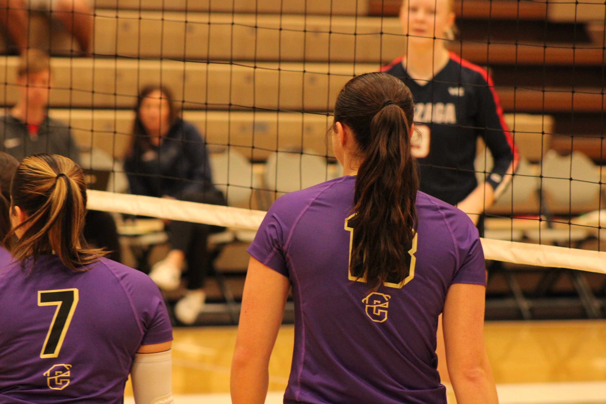

McKaila Grace Balcom was born April 10th, 2005 in Richland, Washington. She grew up in Pasco with her younger brother Will and went to Tri-Cities Prep High School. She graduated in 2023 and is currently attending Carroll College in Helena, Montana and playing collegiate volleyball.
McKaila spent her childhood playing sports, hanging out with her little brother and spending time on the farm with her dad. In high school, she was a three sport varsity athlete for all 4 years of high school, playing volleyball, basketball, tennis for three years and participating in track and field her senior year. She also was a part of her high school ASB, being elected as the executive president of the school her senior year. She also participated in club sports and graduated with a 3.9 cumulative GPA.
McKaila is currently a sopohmore studying business and plans to graduate from Carroll College in 2027 with a degree in Business Marketing and Management and a Hispanic Studies and Languages minor. She's considering going to law school after graduating from Carroll. She is a hitter for her volleyball team, her page can be found here.